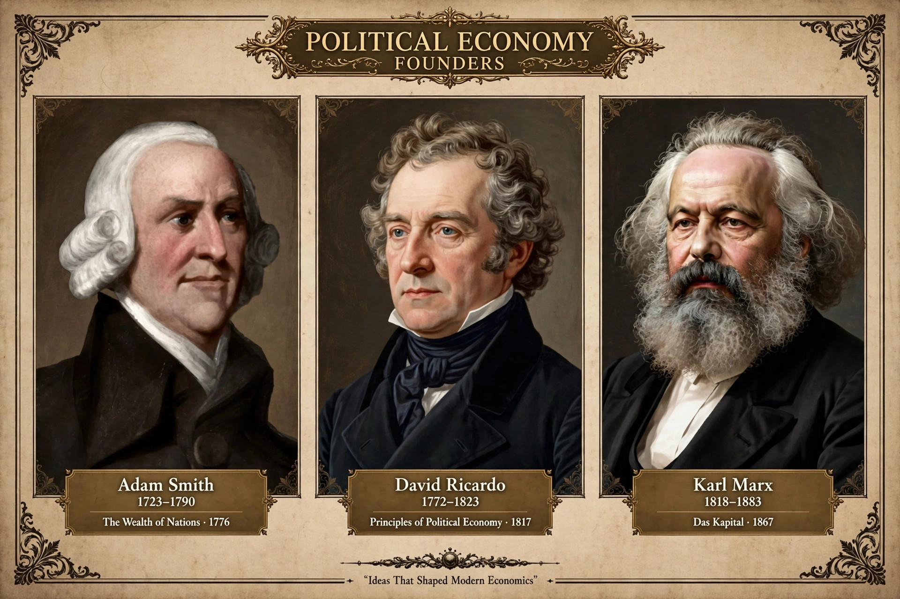

Political economy is the study of how economic systems — such as markets and national economies — and political systems interact. It examines how public policy, political institutions, and the distribution of wealth and power shape one another.

The term originally meant the study of the conditions under which production and wealth were organised in the nation-state. In the 18th and 19th centuries, writers such as Adam Smith, David Ricardo, and Karl Marx treated economics as political economy, analysing class, trade, rent, and value. Smith's The Wealth of Nations (1776) is often taken as a founding work.
Toward the end of the 19th century, the marginal revolution led many economists to drop 'political' and present economics as a more technical science. Political economy survived in Marxist traditions, institutional economics, and later in international political economy.
Modern political economy includes comparative political economy, international political economy, public choice theory, and new political economy. It studies topics such as trade policy, welfare states, regulation, development, and globalisation, asking who gains, who loses, and how institutions mediate conflict over resources.